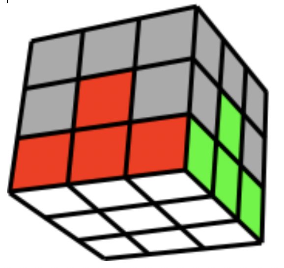
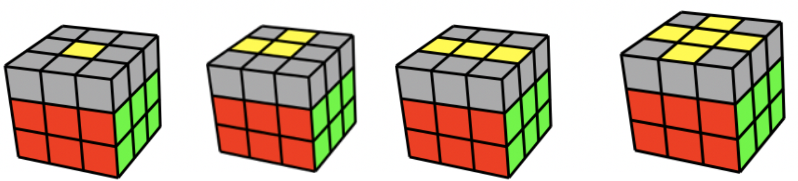
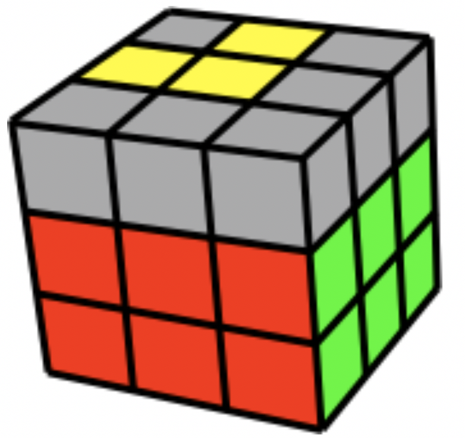
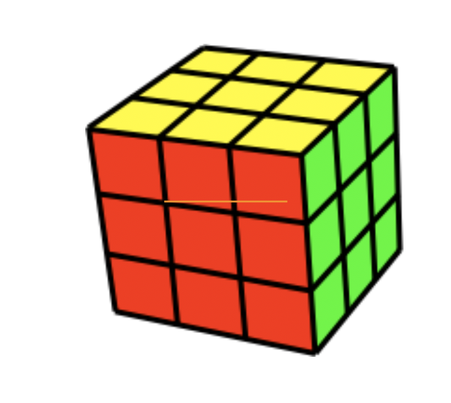

F = Front side U = Topp side D = Underside L = Venstre side R = Høyre side Bokstav alene betyr med klokken. Bokstav med i bak, betyr mot klokken.Hjelpeside
Jobb med hjørnene på toppen enten på R eller L.
De hvite klossene må alltid peke ut før du tar de ned.
Enten R-U-Ri eller Li-Ui-L
Kuben skal nå se slik ut
 Skal den til høyre U-R-Ui-Ri-Ui-Fi-U-F
Skal den til høyre Ui-Li-U-L-U-F-Ui-Fi
Kuben skal nå se slik ut

Før dette steget ser kuben ut som en av disse:
Hold kuben slik at de gule danner en L i venstre hjørnet
 Bruk F-R-U-Ri-Ui-Fi
Gjenta algoritmen til du har det gule krysset på toppen
Finn først 2 sider som passer, hold disse til høyre og bak slik at den siden mot deg og til venstre skal løses.
Bruk R-U-Ri-U-R-U-U-Ri
Funker det ikke med en runde, gjenta algoritmen igjen.
Finn først et hjørne som er på riktig plass, trenger ikke være riktig vei!
Hold dette hjørnet i høyre hjørnet på kuben.
Bruk U-R-Ui-Li-U-Ri-Ui-L
Hold kuben mot deg med det hjørnet du vil begynne med i høyre hjørne.
Viktig å alltid holde kuben i ro, vri kun U-laget når du skal gå til neste hjørnet.
Gjenta algoritmen til høyre hjørne er riktig vei.
Bruk Ri-Di-R-D
Kuben skal nå se slik ut
